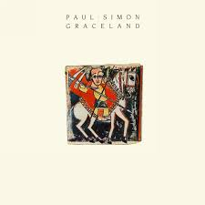

By Numbers
Music sales by format over the years

Paul Simon | 1986
his greatest work
Graceland is the seventh studio album by Paul Simon, released in 1986. Recorded in South Africa during apartheid, the album chronicles love, hope, and loss, thorugh stories of everyday people. Graceland is widely considered one of Paul Simon's greatest works, and is a favorite of mine. The album won a Grammy Award for Album of the Year in 1987.

Paul Simon perfoms Graceland live from The Concert in Hyde Park
Music sales by format over the years